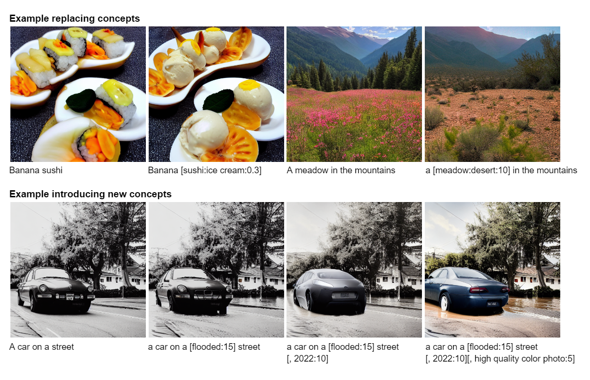

Introduction
The advent of large-scale diffusion models conditioned on text embeddings has allowed for creative control over the generative process. A recent and powerful technique is that of prompt scheduling, i.e., instead of passing a fixed prompt to the diffusion model, the prompt can be changed depending on the timestep. This concept was initially proposed by Doggettx in this reddit post and the code changes to the Stable Diffusion repository can be seen here.

More generally, we can view this as having the conditional information (in this case text embeddings) scheduled w.r.t. time. Formally, assume we have a U-Net trained on the noise-prediction task $\bseps_\theta(\bfx_t, \bfz, t)$ conditioned on a time-scheduled text embedding $\bfz(t)$. The sampling procedure amounts to solving the probability flow ODE from time $T$ to time $0$,
\[ \frac{\rmd \bfx_t}{\rmd t} = f(t)\bfx_t + \frac{g^2(t)}{2\sigma_t}\bseps_\theta(\bfx_t, \bfz(t), t), \]where $f, g$ define the drift and diffusion coefficients of a variance-preserving (VP) type SDE.
Training-free guidance
A closely related area of active research has been the development of techniques which search for the optimal generation parameters. More specifically, they attempt to solve the following optimization problem:
\[ \argmin_{\bfx_T, \bfz, \theta}\quad \mathcal{L}\!\bigg(\bfx_T + \int_T^0 f(t)\bfx_t + \frac{g^2(t)}{2\sigma_t}\bseps_\theta(\bfx_t, \bfz, t)\;\rmd t\bigg), \]where $\mathcal L$ is a real-valued loss function on the output $\bfx_0$.
Several recent works explore solving the continuous adjoint equations to find the gradients
\[ \frac{\partial \mathcal L}{\partial \bfx_t}, \qquad \frac{\partial \mathcal L}{\partial \bfz}, \qquad \frac{\partial \mathcal L}{\partial \theta}. \]These gradients can then be used in combination with gradient-descent algorithms to solve the optimization problem. However, what if $\bfz$ is scheduled and not constant w.r.t. time?
Problem statement. Given
\[ \bfx_0 = \bfx_T + \int_T^0 f(t)\bfx_t + \frac{g^2(t)}{2\sigma_t}\bseps_\theta(\bfx_t, \bfz(t), t)\;\rmd t, \]and $\mathcal L (\bfx_0)$, find
\[ \frac {\partial \mathcal L}{\partial \bfz(t)}, \qquad t \in [0,T]. \]In an earlier post we showed how to find $\partial \mathcal L / \partial \bfz$ by solving the continuous adjoint equations. How do the continuous adjoint equations change when replacing $\bfz$ with a time-scheduled $\bfz(t)$ in the sampling equation? What we will now show is that
we can simply replace $\bfz$ with $\bfz(t)$ in the continuous adjoint equations.
This result is intuitive, but does require some technical details to show.
Gradients of time-scheduled conditional variables
It is well known that diffusion models are just a special type of neural differential equation, either a neural ODE or SDE. As such we will show this result holds more generally for neural ODEs.
In the remainder of this post we provide the proof of this result. Our proof technique is an extension of the one used by Patrick Kidger (Appendix C.3.1) to prove the existence of a solution to the continuous adjoint equations for neural ODEs.
Proof
Recall that $\bfz(t)$ is a piecewise function of time with partition of the time domain $\Pi$. Without loss of generality consider some time interval $\pi = [t_{m-1}, t_m]$ for some $1 \leq m \leq n$. Consider the augmented state defined on the interval $\pi$:
\[ \frac{\rmd}{\rmd t} \begin{bmatrix} \bfy\\ \bfz \end{bmatrix}(t) = \bsf_{\text{aug}} = \begin{bmatrix} \bsf_\theta(\bfy_t, \bfz_t, t)\\ \overrightarrow\partial\bfz(t) \end{bmatrix}, \]where $\overrightarrow\partial\bfz(t): [0,T] \to \R^z$ denotes the right derivative of $\bfz$ at time $t$. Let $\bfa_\text{aug}$ denote the augmented adjoint state as
\[ \bfa_\text{aug}(t) := \begin{bmatrix} \bfa_\bfy\\\bfa_\bfz \end{bmatrix}(t). \]Then the Jacobian of $\bsf_\text{aug}$ is defined as
\[ \frac{\partial \bsf_\text{aug}}{\partial [\bfy, \bfz]} = \begin{bmatrix} \frac{\partial \bsf_\theta(\bfy, \bfz, t)}{\partial \bfy} & \frac{\partial \bsf_\theta(\bfy, \bfz, t)}{\partial \bfz}\\ \mathbf 0 & \mathbf 0 \end{bmatrix}. \]As the state $\bfz(t)$ evolves with $\overrightarrow\partial\bfz(t)$ on the interval $[t_{m-1}, t_m]$ in the forward direction, the derivative of this augmented vector field w.r.t. $\bfz$ is clearly $\mathbf 0$ as it only depends on time. Remark: as the bottom row of the Jacobian of $\bsf_\text{aug}$ is all $\mathbf 0$ and $\bsf_\theta$ is continuous in $t$ we can consider the evolution of $\bfa_\text{aug}$ over the whole interval $[0,T]$ rather than just a partition of it. The evolution of the augmented adjoint state on $[0,T]$ is then given as
\[ \frac{\rmd \bfa_\text{aug}}{\rmd t}(t) = -\begin{bmatrix} \bfa_\bfy & \bfa_\bfz \end{bmatrix}(t) \frac{\partial \bsf_\text{aug}}{\partial [\bfy, \bfz]}(t). \]Therefore $\bfa_\bfz(t)$ is a solution to the initial value problem
\[ \bfa_\bfz(T) = 0, \qquad \frac{\rmd \bfa_\bfz}{\rmd t}(t) = -\bfa_\bfy(t)^\top \frac{\partial \bsf_\theta(\bfy(t), \bfz(t), t)}{\partial \bfz(t)}. \]Next we show that there exists a unique solution to the initial value problem. Now as $\bfy$ is continuous and $\bsf_\theta$ is continuously differentiable in $\bfy$, it follows that $t \mapsto \tfrac{\partial \bsf_\theta}{\partial \bfy}(\bfy(t), \bfz(t), t)$ is a continuous function on the compact set $[t_{m-1}, t_m]$. As such it is bounded by some $L > 0$. Likewise, for $\bfa_\bfy \in \R^d$ the map $(t, \bfa_\bfy) \mapsto -\bfa_\bfy \tfrac{\partial \bsf_\theta}{\partial [\bfy, \bfz]}(\bfy(t), \bfz(t), t)$ is Lipschitz in $\bfa_\bfy$ with Lipschitz constant $L$, and this constant is independent of $t$. Therefore, by the Picard–Lindelöf theorem, the solution $\bfa_\text{aug}(t)$ exists and is unique.